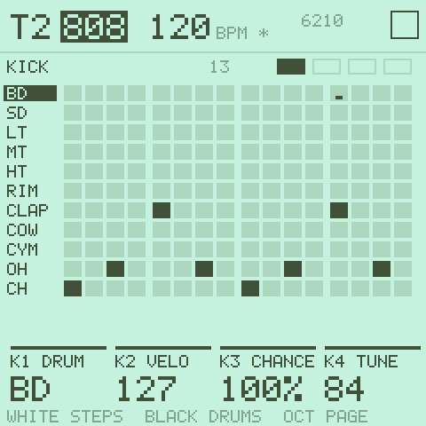
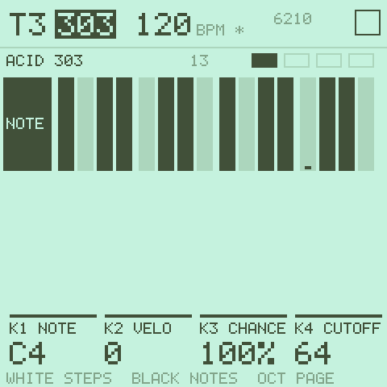

What's inside
Everything a drum machine should do first, on the FM-1's own keys, knobs and screen. It runs on the FM1 Open V14 engine, so timing stays sample accurate.
808 kit
Track 1: eleven drums (BD, SD, three toms, rim, clap, cowbell, cymbal, open and closed hat) on the DRUM 808 engine.
909 style kit
Track 2: the same engine voiced tighter, brighter and harder: short punchy kick, snappy snare, crisp hats.
303 acid
Track 3: the BASS 303 engine with an acid line ready to go. Cutoff on K4, accents on velocity.
TR step keys
The 16 white keys are the steps of the selected drum. Black keys pick a drum and play it.
Blink codes
Every light has a rhythm: playhead, beat, record, unsaved, muted, roll. You can read the machine without looking at the screen.
Velocity and chance
K2 sets the step's velocity (accent at 120 and up), K3 gives it a chance to play from 12% to 100%.
Up to 64 steps
Each of the eight tracks loops over 16, 32, 48 or 64 steps. OCT − and + page through them.
Roll
ARP on a drum track is a drum repeat: hold a drum key and it rolls. Rate, swing and hold on the ARP page.
Mixer
Mute and solo on the keys, four volumes on the knobs. A muted track keeps double flashing so you never forget it.
Screens
240 × 240 pixels, two shades of green, no phone maker's logo. All pictures below come from the firmware's own drawing code.






Blink codes
The FM-1's button lights are on or off, there is no dimming. So every state gets its own rhythm instead of a brightness. The squares below blink the way the panel does.
| Light | Rhythm | Means |
|---|---|---|
| Step key | Steady | The selected drum plays on this step. |
| Step key | Runs across the keys | Playhead. An empty step lights for half a sixteenth; a set step blinks off for a moment. |
| Step key | 2 Hz while stopped | The step you are editing (K2 and K3 change it). |
| Black key | Steady, flashes on hits | The selected drum. Any other drum's key flashes when it plays. |
| PLAY | First third of each beat, longer on beat 1 | Playing, and where the bar starts. Slow blink when paused. |
| REC | 8 Hz | Recording. |
| SAVE | 1 Hz | The project has edits that are not saved yet. |
| GLO | Double flash every bar | At least one track is muted or soloed. On the mixer, muted tracks' keys double flash too. |
| ARP | Every sixteenth | Roll (drum repeat) is on. |
| OCT − / + | Steady | There is another page of steps that way. |
Install in five minutes
In desktop Chrome or Edge, over USB. The original V15 firmware is inside the installer, so you can always go back.
Back up
Export the projects, voices and samples you want to keep.
Connect
Switch the FM-1 on and plug it straight into the computer with a USB data cable.
Install
Open the installer page, press START and follow it. Coming from stock V15, enable force flash once.
Play
The FM-1 restarts into 6210. Press PLAY: on an empty project the 6210 kit is already loaded.
Good to know
Engine limits
The sequencer and the sound engines are M-VAVE's FM1 Open V14 library. Tracks loop over 16, 32, 48 or 64 steps, and there are eight tracks.
The 909 kit
There is no separate 909 engine. Track 2 is the 808 engine with 909-style settings, saved with your project like any sound.
Lights are on or off
The panel cannot dim a light, so dim and bright states are shown as rhythms instead.
Everything else stays
The step editor, sound editors, FX, mixer, projects, MIDI and the arpeggiator of FM1 Open are all still there.